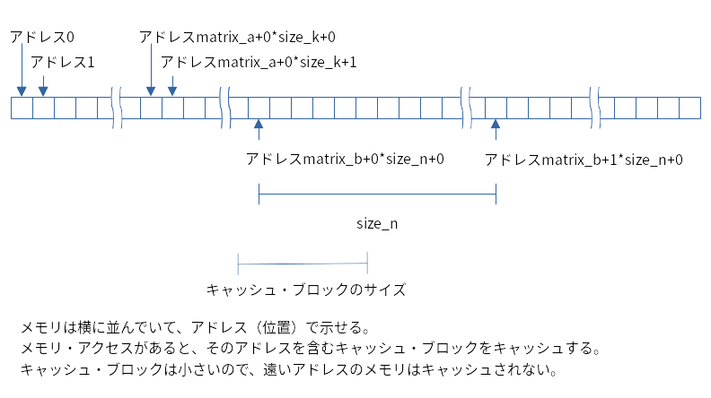

上司に「この処理、もっと高速化して」と言われて、「コンピューターを何百台も用意するとか、金を湯水のように注ぎ込んで強力なクラウドを借りるとか、数億円かけてASIC（Application Specific Integrated Circuit）を作ってみたらでどうでしょうか？」と答えたら怒られました。Google様ならこの答えを鼻歌交じりで実行できるんだろうけど、Google様は私なんかを雇ってくれないしなぁ……。
しょうがないので、アルゴリズムの改良……はまず最初にやるべきで、で、もしすでにアルゴリズムを改良した後なのであれば、GPGPU（General-Purpose computing on Graphics Processing Units）なんてどうでしょうか？
本稿では、GPGPUの一つであるCUDAを使用して、プログラムを高速化する様々な方法を述べます。コードはGitHubで、開発に使用した環境はArch Linuxです。
GPUは遅い……
まず最初に理解していただきたいこと、それは、GPUは遅いということです。足し算や掛け算を普通にやらせたら、GPUの速度はCPUの足元にも及ばないんです。
試してみましょう。題材は私のようなおっさんプログラマが泣いて喜ぶマンデルブロ集合です。まずは、素のC++17で作ってみました。
#include <complex>
#include <iostream>
#include <iterator>
#include <tuple>
#include <vector>
#include "../util/util.hpp"
// マンデルブロの漸化式が何回で無限大に発散するか。発散しない場合は0を返します。
inline auto divergence_count(const std::complex<float>& c) noexcept {
auto z = std::complex(0.0f, 0.0f);
for (auto i = 0; i < 100; ++i) {
if (std::isinf(z.real())) {
return i;
}
z = std::pow(z, 2) + c;
}
return 0;
}
// real_minからreal_max、imag_minからimag_maxの範囲の複素数平面をreal_size×imag_sizeに区切って、それぞれがマンデルブロ集合に含まれるか確認します。
inline auto mandelbrot_set(float real_min, float real_max, std::size_t real_size, float imag_min, float imag_max, std::size_t imag_size) noexcept {
auto result = std::vector<int>(); result.reserve(real_size * imag_size);
for (const auto& imag: util::linspace<float>(imag_min, imag_max, imag_size)) {
for (const auto& real: util::linspace<float>(real_min, real_max, real_size)) {
result.emplace_back(divergence_count(std::complex(real, imag)));
}
}
return std::make_tuple(result, real_size, imag_size);
}
// 適切なreal_sizeとimag_sizeを作成して、mandelbrot_set()を呼び出します。
inline auto mandelbrot_set(float real_min, float real_max, float imag_min, float imag_max) noexcept {
auto [real_size, imag_size] = [&]() { // ラムダ式を使うと変数のスコープを短くできて便利。構造化束縛を使うと複数の値をリターンできて便利。
const auto real_diff = real_max - real_min;
const auto imag_diff = imag_max - imag_min;
return std::make_tuple(
static_cast<std::size_t>(1000 * std::min(real_diff / imag_diff, 1.0f)),
static_cast<std::size_t>(1000 * std::min(imag_diff / real_diff, 1.0f))
);
}();
return mandelbrot_set(real_min, real_max, real_size, imag_min, imag_max, imag_size);で、
}
// メイン・ルーチン。
int main(int argc, char** argv) {
// 時間計速。util::timeitは自作の処理時間計測ルーチン。./util/util.hppを参照してください。
util::timeit([&]() {
mandelbrot_set(-2.0f, 2.0f, -2.0f, 2.0f);
});
// プログラムが正しいかを確認するため、マンデルブロ集合を出力します。
const auto [v, w, h] = mandelbrot_set(-2.0f, 2.0f, -2.0f, 2.0f);
{
auto it = std::begin(v);
for (auto i = 0_z; i < h; ++i, it += w) {
std::copy(it, it + w, std::ostream_iterator<float>(std::cout, "\t"));
std::cout << std::endl;
}
}
return 0;
}動かしてみましょう。出力を画像にして表示する処理はPythonで作成しました。
$ make && ./mandelbrot | python plot.pyはい。きれいにマンデルブロ集合が表示されましたのでプログラムはこれで正しそう。で、C++でマンデルブロ集合生成にかかった時間は、私の型落ちCPUのPCで0.101171秒でした。
では、上のプログラムのmandelbrot_set()関数（2つある内の上の方）をCUDAでGPU上で実行させてみます。コードはこんな感じ。
#include <complex>
#include <iostream>
#include <iterator>
#include <tuple>
#include <vector>
#include <cuda.h>
#include <thrust/complex.h>
#include "../util/cudautil.hpp"
#include "../util/util.hpp"
__device__ // GPU上で実行される関数には__device__を付けてください。
inline auto divergence_count(const thrust::complex<float>& c) noexcept {
auto z = thrust::complex(0.0f, 0.0f); // __device__関数ではライブラリの呼び出しに制限があって、std::complexが使えません。Thrustのcomplexで代用しました。
for (auto i = 0; i < 100; ++i) {
if (std::isinf(z.real())) {
return i;
}
z = z * z + c; // thrust::complexではstd::pow()を使用できなかったので、z * zに書き換えました。
}
return 0;
}
__device__
inline auto linspace(float start, float stop, std::size_t size) noexcept { // util::linspace()は__device__ではないので、__device__バージョンを作成しました。
auto result = new float[size]; // std::vectorは使用できなかったので、生ポインターで。
const auto delta = (stop - start) / static_cast<float>(size - 1);
for (auto i = static_cast<std::size_t>(0); i < size; ++i) {
result[i] = start + delta * static_cast<float>(i);
}
return result;
}
__global__ // GPU上で実行され、かつ、CPUから呼び出される関数には__global__をつけてください。
void mandelbrot_set(float real_min, float real_max, std::size_t real_size, float imag_min, float imag_max, std::size_t imag_size, int* result) { // __global__の戻り値はvoidです。また、noexceptも付加できません。
const auto imags = linspace(imag_min, imag_max, imag_size); // あとでdeleteしなければならないので、変数に保存しておきます。
const auto reals = linspace(real_min, real_max, real_size);
for (auto i = 0; i < imag_size; ++i) { // ポインターだと拡張forが使えないので、普通のforを使います。
for (auto j = 0; j < real_size; ++j) {
result[i * real_size + j] = divergence_count(thrust::complex(reals[j], imags[i]));
}
}
delete reals; // linspaceはnewしたポインターを返すので、自前でdeleteします。
delete imags;
}
inline auto mandelbrot_set(float real_min, float real_max, float imag_min, float imag_max) noexcept {
const auto [real_size, imag_size] = [&]() {
const auto real_diff = real_max - real_min;
const auto imag_diff = imag_max - imag_min;
return std::make_tuple(
static_cast<std::size_t>(1000 * std::min(real_diff / imag_diff, 1.0f)),
static_cast<std::size_t>(1000 * std::min(imag_diff / real_diff, 1.0f))
);
}();
auto result = std::vector<int>(real_size * imag_size);
int* result_device; // GPUのメモリとCPUのメモリは異なるので、GPU用のメモリを用意します。
cuda_check(cudaMalloc(&result_device, sizeof(int) * real_size * imag_size)); // GPUのメモリの確保はcudaMallocで。エラー・チェックは戻り値でやるので、cudautil::cuda_check()という関数を自作しました。
mandelbrot_set<<<1, 1>>>(real_min, real_max, real_size, imag_min, imag_max, imag_size, result_device); // __global__の呼び出しには、<<<block, grid>>>で並列度を指定します。今回は1並列（並列実行しない）でやります。
cuda_check(cudaGetLastError()); // __global__の呼び出しでエラーが発生してないかのチェック。
cuda_check(cudaMemcpy(result.data(), result_device, sizeof(int) * real_size * imag_size, cudaMemcpyDeviceToHost)); // GPUのメモリーからCPUのメモリーに結果をコピーします。
cuda_check(cudaFree(result_device)); // GPUのメモリ開放はcudaFreeでやります。
return std::make_tuple(result, real_size, imag_size);
}
int main(int argc, char** argv) {
first_cudaMalloc_is_too_slow(); // 一回目のcudaMallocは遅いので、タイム計測に影響しないように一回cudaMallocしておきます。
cuda_check(cudaDeviceSynchronize()); // CUDAの関数呼び出しは非同期なので、タイム計測に影響しないようにGPU上の処理が終わるまで待ちます。
util::timeit([&]() {
mandelbrot_set(-2.0f, 2.0f, -2.0f, 2.0f);
});
const auto [v, w, h] = mandelbrot_set(-2.0f, 2.0f, -2.0f, 2.0f);
{
auto it = std::begin(v);
for (auto i = 0_z; i < h; ++i, it += w) {
std::copy(it, it + w, std::ostream_iterator<float>(std::cout, "\t"));
std::cout << std::endl;
}
}
return 0;
}あぁいろいろと面倒くせぇ……のですけど、順を追っていけば別に難しくはありません。
まずは、2つある内の下の方のmandelbrot_set()を見てみてください。cudaMalloc()したりcudaMemcpy()したりcudaFree()したりしています。なぜこんな面倒なことをしているかというと、GPUのメモリとCPUのメモリは異なるためです。
だから、std::vectorでCPUのメモリに場所を確保したのとは別にcudaMalloc()でGPUのメモリを確保して、で、GPUのメモリ上に生成されたマンデルブロ集合の情報をcudaMemcpy()でCPUのメモリに転送してあげなければなりません。また、確保したメモリは開放しなければならないので、cudaFree()を呼ぶのも忘れてはなりません（実は後述するThrustを使うと少し楽ができるのですけど）。あ、関数の引数は、普通に渡しても大丈夫です。そうじゃないと、そもそもGPUのメモリ・アドレスを渡せないですしね。
あと、CUDAの関数は例外を使用していないので、戻り値を使ってエラー・チェックしなければなりません。あぁ面倒くせぇけど、これはエラー・チェック用の関数を作成することで少し楽になります。今回はcuda_check()という関数を作成しました。
#include <cstdlib>
#include <cuda.h>
inline auto cuda_check(const cudaError_t& error) noexcept {
if (error == cudaSuccess) {
return;
}
std::cerr << cudaGetErrorString(error) << std::endl;
std::exit(1);
}さて、これでGPUのメモリを確保できたので、次はGPU上で実行する処理を書きます。その処理が、２つあるうちの上の方のmandelbrot_set()です。こちらを見てみると、関数定義の前に__global__って書いてあります。この__global__を付加してあげると、CPUから呼び出せて、GPUで実行される関数になるんですね。で、__global__な関数は、戻り値を使用できない（voidでなければならない）、inlineやnoexcept等を使用できない、可変引数や再帰処理や性的変数を使ってはダメ等の制約はあるのですが、それらを除けば、文法的には普通のC++です。ただね、ここからはCPU向けの関数を呼び出すことができないんですよ……。たとえば、std::complexもstd::vectorも使えません。というかね、自作した関数すら呼び出せません。自作した関数を__global__から呼び出したいなら、上のコードのdivergence_count()やlinspace()みたいに関数に__device__をつけてあげないとダメ。で、その中ではやっぱり標準ライブラリを呼び出せません（divergence_count()で使用しているstd::isinf()のような算術関数は、例外的に使用可ですけど。あと、インライン展開される場合もいけるみたい）。というわけで、標準ライブラリを使わない形にいろいろ書き換えました。std::complexの代わりに使用しているthrust::complexは、後述するNVIDIAのThrustライブラリが提供する複素数型です。newとかdeleteなんて、かなり久しぶりに使いましたよ。あぁ面倒くせぇ。
でも、この標準ライブラリが使えないという問題は、CUDA 10.2で追加されたlibcu++によって、今後は改善されていくと思われます。libcu++はCUDA版の標準ライブラリで、今はまだあまりカバー範囲が広くないのですけど、そのうち標準ライブラリの多くがサポートされるようになって、今より普通にC++プログラミングできるようになるんじゃないかな。本稿を書いている2021年3月現在だとサポートする範囲が狭いので、今回は使っていませんけど。
あとは、__global__関数を呼び出すだけ。___global___関数を呼び出すには上のコードのようにmandelbrot_set<<<1, 1>>>(real_min, real_max, real_size, imag_min, imag_max, imag_size, result_device);みたいにします。普通のC++と違うのは<<<1, 1>>>の部分で、ここはどんなふうに並列化するかを表現する部分なのですけど、今回は1, 1にして1並列で（つまり並列化しないで）実行します。あと、__global__や<<<1, 1>>>は普通のC++コンパイラでは処理できないので、CUDA用のコンパイラのnvccでコンパイルしなければならなくて、その場合の拡張子は*.cuが標準になります。詳しくはmakefileを参照してください。あぁ本当にいろいろと面倒くせぇ！
というわけで、CUDAプログラミングのやり方をまとめると、以下になります。
- ソース・コードの拡張子は*.cu。nvccでコンパイルする。
- CPUから呼び出すGPUで実行する関数には、
__global__を付ける。戻り値はvoidでなければならない。 __global__関数から呼び出す関数は、__device__を付ける（今回は使用していませんけど、CPUでも使用したいなら__device__ __host__としてください）。__global__関数や__device__関数からは標準ライブラリを呼べない。標準ライブラリなしで頑張る。__global__関数を呼び出すときは、<<<grid, block>>>をつけて呼び出す。- CPUに渡したり、CPUから受け取ったりするデータの内、引数で表現できないものは
cudaMalloc()で確保し、cudaFree()で開放する。 - CPUとGPUのメモリ間のコピーは、
cudaMemcpy()で実施する。 - エラー・チェックは戻り値のチェックで実施。
- 標準ライブラリは、算術関数以外は使用できない。
- とにかくいろいろ面倒くせぇ。
とまぁ、これだけ苦労してCUDA化した結果を見てみると、私の型落ちのGeForce GTX 1080 Tiでのmandelbrot_set()の実行にかかった時間は……0.627871秒でした。うん、CPUの6.21倍くらい遅い！ というわけで、いいですか、GPUは遅いんです……。
GPUは速い！
じゃあなんで余計な苦労してわざわざGPGPUするのかといえば、「GPUは速い」からなんです……と言われても、遅い証拠を見せられた後なのでなんだかわからないですよね。一体なんなのか、CPUをスポーツ・カーに、GPUをバスに例えて説明させてください。
CPUはスポーツカーなので速度はスゴイのですけど、少人数しか乗れません。GPUはバスなので速度はそこそこなのですけど、大人数が乗れます。さて、大人数をA地点からB地点まで運ぶという目的の場合、どちらが早く終了するでしょうか？ そう、スポーツ・カーでピストン輸送するよりも、バスに大人数を載せて一回で運んだ方が実行に必要な時間は少ないというわけ。
で、コンピューター処理で「大人数をA地点からB地点まで運ぶ」に相当するのは、同じ処理（A地点からB地点まで運ぶ）を何回も繰り返す（大人数）場合になります。ピストン輸送に相当するループ処理の内側を、ループ無しで並列で同時に実行する。これで所要時間が短くなるというわけ。先程のコードでは、GPUというバスに乗客を1人しか載せずにピストン輸送していたんですな。それではバスの良さがでなくて当然でしょう。
というわけで、同時に何人も乗せる（処理を並列で実行する）ようにプログラムを修正しましょう。考えてみると、今回のコードではdivergence_count()は1,024×1,024で100万回とちょっと呼ばれます。で、-2-2iの場合にマンデルブロ集合の漸化式が発散するかと2+2iの場合にマンデルブロ集合の漸化式が発散するかは無関係ですから、並列での実行が可能。だったら、CUDAで並列で実行する形にしちゃえばよい。コードはこんな感じ。
#include <iostream>
#include <iterator>
#include <tuple>
#include <vector>
#include <cuda.h>
#include <thrust/complex.h>
#include "../util/cudautil.hpp"
#include "../util/util.hpp"
// mandelbrot-cuda-ngと同じ。標準ライブラリを使用しない形に書き換えただけです。
__device__
inline auto divergence_count(const thrust::complex<float>& c) noexcept {
auto z = thrust::complex(0.0f, 0.0f);
for (auto i = 0; i < 100; ++i) {
if (std::isinf(z.real())) {
return i;
}
z = z * z + c;
}
return 0;
}
// この関数をGPU上で並列で実行します。
__global__
void mandelbrot_set(float real_min, float real_max, std::size_t real_size, float imag_min, float imag_max, std::size_t imag_size, int* result) {
const auto i = blockIdx.y * blockDim.y + threadIdx.y; // 処理対象を取得します。詳細は本文を参照してください。
const auto j = blockIdx.x * blockDim.x + threadIdx.x; // 同上。
if (i >= imag_size || j >= real_size) { // 範囲チェック。iがimag_sizeを超えることはないのですけど、パターン化しておいたほうがバグが減るので。
return;
}
const auto imag = imag_min + (imag_max - imag_min) / static_cast<float>(imag_size - 1) * static_cast<float>(i); // linspace()の処理を移植。スレッドのIDから、対象となる複素数を計算します。
const auto real = real_min + (real_max - real_min) / static_cast<float>(real_size - 1) * static_cast<float>(j); // 同上。
result[i * real_size + j] = divergence_count(thrust::complex(real, imag));
}
// GPU上で実行する関数を、この関数から呼び出します。
inline auto mandelbrot_set(float real_min, float real_max, std::size_t real_size, float imag_min, float imag_max, std::size_t imag_size) noexcept {
auto result = std::vector<int>(real_size * imag_size);
int* result_device;
cuda_check(cudaMalloc(&result_device, sizeof(int) * real_size * imag_size));
// 並列でmandelbrot_setを実行します。gridとblockについては本文を参照してください。
const auto grid = dim3((real_size + 256 - 1) / 256, imag_size);
const auto block = dim3(256, 1);
mandelbrot_set<<<grid, block>>>(real_min, real_max, real_size, imag_min, imag_max, imag_size, result_device);
cuda_check(cudaGetLastError());
cuda_check(cudaMemcpy(result.data(), result_device, sizeof(int) * real_size * imag_size, cudaMemcpyDeviceToHost));
cuda_check(cudaFree(result_device));
return std::make_tuple(result, real_size, imag_size);
}
// mandelbrotと同じ。
inline auto mandelbrot_set(float real_min, float real_max, float imag_min, float imag_max) noexcept {
const auto [real_size, imag_size] = [&]() {
const auto real_diff = real_max - real_min;
const auto imag_diff = imag_max - imag_min;
return std::make_tuple(
static_cast<std::size_t>(1000 * std::min(real_diff / imag_diff, 1.0f)),
static_cast<std::size_t>(1000 * std::min(imag_diff / real_diff, 1.0f))
);
}();
return mandelbrot_set(real_min, real_max, real_size, imag_min, imag_max, imag_size);
}
// mandelbrot-cuda-ngと同じ。
int main(int argc, char** argv) {
first_cudaMalloc_is_too_slow();
cuda_check(cudaDeviceSynchronize());
util::timeit([&]() {
mandelbrot_set(-2.0f, 2.0f, -2.0f, 2.0f);
});
const auto [v, w, h] = mandelbrot_set(-2.0f, 2.0f, -2.0f, 2.0f);
{
auto it = std::begin(v);
for (auto i = 0_z; i < h; ++i, it += w) {
std::copy(it, it + w, std::ostream_iterator<float>(std::cout, "\t"));
std::cout << std::endl;
}
}
return 0;
}まず最初に注目していただきたいのは、<<<1, 1>>>から<<<grid, block>>>への変更です。CUDAでは、このように書くだけで大量のスレッドが生成され、並行で実行されるようになります。imag_size×real_size分の100万回と少しのピストン輸送から一回の輸送になるなら、そりゃ早く済んで当たり前ですな（輸送回数が何回になるかは、GPU内のコアの数次第ですけど）。
で、このgridとかblockって何なのかというと、CUDAのスレッドの実行モデルを表しています。以下の図がCUDAにおけるスレッドの実行モデルなのですけど、グリッドが複数のブロックを持ち、それぞれのブロックは複数のスレッドを持ちます。gridやblockで、生成するブロックの数や各ブロックの中のスレッドの数を指定しているわけですな。
gridではグリッドの中に生成するブロックの数を、blockではブロックの中に生成するスレッドの数を指定します。このgridやblockの型であるdim3は、xとyとzの3つの値で、生成するブロックやスレッドの数を指定するためのクラスです。このdim3のxとyとzは全て使用しなければならないわけではなくて、たとえば今回のように2つしか指定しない場合はxとyだけが設定されます。今回のコードでは、複素数の実数部のインデックスをx、虚数部のインデックスをyにしました。なお、以前のコードで使用した<<<1, 1>>>は<<<dim3(1), dim3(1)>>>と同じ意味で、これだとグリッドの中にブロックを1つだけ、そしてそのブロックの中にスレッドを1つだけ生成するので、並列実行なしのピストン輸送になって遅かったというわけ。
で、ここまでを読んで、どうせgridとblockという2つの値を使うのなら、gridにimag_sizeを設定してblockにreal_sizeを設定しちゃえばもっと簡単じゃん……と考えたかもしれませんけど、その方式は不可能だったりパフォーマンス面で不利になったりするので使ってはなりません。というのも、ブロック中に作成できるスレッドの数には最大値の制限があって（私が使用しているGeForce GTX 1080 Tiでは1,024スレッドまで）、あと、ブロック中のスレッドの数が32の場合に効率が良かったりするんです。だから、blockの方は、x×y×zが32の倍数、かつ、制限値よりも小さな値にしなければなりません。というわけで、今回はブロック中に生成するスレッドの数であるblockは、dim(256, 1)にしました。1つのブロックでは、画像の縦1ラインの横256ドットを処理するスレッドを生成するわけですね。で、この場合のgridの値は、このプログラムでのxの要素数であるreal_sizeを256で割った結果……だと1つ足りなくなってしまうかもしれない（たとえば10個の要素を3ずつ処理する場合だと、10 / 3では3ブロック×3スレッドで9個のスレッドしか生成されない）ので、一般に以下のようなコードになります。
const auto grid = dim3((real_size + 256 - 1) / 256, imag_size);
const auto block = dim3(256, 1);
mandelbrot_set<<<grid, block>>>(real_min, real_max, real_size, imag_min, imag_max, imag_size, result_device);さて、生成されるスレッドの方は、自分がどの要素を処理すればよいのかのかが分からないと処理を開始できません。CUDAではない普通のスレッド・プログラミングなら引数で情報を渡すのですけど、CUDAではスレッドは同期で実行される（複数のスレッドが同じ命令を同じタイミングで実行します。たとえば、if文で条件分岐するような場合は、実行する命令を場合分けできないので、条件が偽となったスレッドは、他のスレッドが真となった場合の処理を終えるまで何もしないで待つという面白い挙動になります）ため、一気にスレッドを起動しなければならず、だからスレッド一つ一つに引数としてパラメーターを渡すことはできません。ではどうするのかというと、スレッド毎に一意になるIDを割り振ることで対応し、ブロックのIDはblockId、スレッドのIDはthreadIdという暗黙の変数を通じて取得できるようになっています。これに加えてblockDimという、ブロックあたり何個のスレッドが生成されたのかを表現する変数も使用できます。というわけで、スレッドの処理対象は、以下のコードで取得できます。
const auto i = blockIdx.y * blockDim.y + threadIdx.y;
const auto j = blockIdx.x * blockDim.x + threadIdx.x;今回は、iが複素数の虚数部のインデックス、jが実数部のインデックスになるわけですね。なお、今回のコードだとblockDim.yとthreadIdx.yの値はどちらも1になるので少し無駄な計算をしているのですけど、こんな小さな無駄を気にするより、呼び出し側のgridやblockを変更しても正常動作する保守性の高さの方が重要でしょうからこのままで。
あと、iやjの値は、blockの値次第では要素数であるimag_sizeやreal_sizeを超える可能性があるので、範囲チェックも必要です（10の要素をブロックあたり3スレッドで処理する場合、最後のスレッドでは10個目と11個目と12個目を処理することになっちゃうでしょ？）。今回のコードではiがimag_size以上になることはありませんけど、保守性を向上させるためにチェック処理を書きました。どの__global__関数も同じ書き方になっている方が、コードに間違いがないかをチェックときに簡単ですからね。
あとは、iとjから、linspace()関数の一部をコピー＆ペーストして作成した処理を通じてimagとrealに変換すれば、残りはこれまでと同じで完成。
このプログラムを実行してみると、mandelbrot_set()にかかった時間は、たったの0.001492秒でした！ CPUでの処理時間が0.101171秒でしたから、わずか14.7%くらいの時間しかかかっていません！ 67.8倍の高速化ですよ！ ほら、CUDAは早いでしょ？
……でも、私が使用しているGeForce GTX 1080 Tiのコア数は3,584基なので、最高にうまく行ったなら繰り返し回数は1/3,584回に減ることが期待できます。いくらGPUの処理速度が遅いとはいっても、67.8倍の高速化ではちょっと納得できないかもしれません。そんなときは、nvprofコマンドで各関数の処理時間を計測してみましょう。
$ nvprof ./mandelbrot-cuda > /dev/null
==32106== NVPROF is profiling process 32106, command: ./mandelbrot-cuda
0.0015691
==32106== Profiling application: ./mandelbrot-cuda
==32106== Profiling result:
Type Time(%) Time Calls Avg Min Max Name
GPU activities: 86.21% 4.7004ms 11 427.31us 410.83us 466.21us [CUDA memcpy DtoH]
13.79% 752.18us 11 68.380us 68.124us 68.892us mandelbrot_set(float, float, unsigned long, float, float, unsigned long, int*)
API calls: 94.59% 164.77ms 12 13.731ms 109.64us 163.30ms cudaMalloc
3.87% 6.7422ms 11 612.93us 583.53us 679.62us cudaMemcpy
0.61% 1.0570ms 1 1.0570ms 1.0570ms 1.0570ms cuDeviceTotalMem
0.56% 978.29us 12 81.524us 73.700us 94.070us cudaFree
0.16% 287.26us 101 2.8440us 410ns 114.42us cuDeviceGetAttribute
0.16% 273.15us 11 24.831us 20.690us 33.230us cudaLaunchKernel
0.03% 56.990us 1 56.990us 56.990us 56.990us cuDeviceGetName
0.01% 8.9100us 1 8.9100us 8.9100us 8.9100us cuDeviceGetPCIBusId
0.00% 4.1300us 3 1.3760us 760ns 2.3000us cuDeviceGetCount
0.00% 3.9400us 11 358ns 260ns 520ns cudaGetLastError
0.00% 3.7200us 1 3.7200us 3.7200us 3.7200us cudaDeviceSynchronize
0.00% 2.4500us 2 1.2250us 510ns 1.9400us cuDeviceGet
0.00% 830ns 1 830ns 830ns 830ns cuDeviceGetUuidnvprofの結果を見てみると、mandelbrot_set()にかかった時間は平均で68.380マイクロ秒でした。CPUでの実行時間の0.101171を3,584で割ると0.000028229で28.229マイクロ秒ですから、計測には他の処理が含まれていることとGPUの処理速度は遅いこととnvprofのオーバーヘッドを考えれば、まぁ、こんなものなのかな。
それよりも気にしなければならないのは、GPUでの処理の86.21%がGPUとCPUの間のメモリ転送（[CUDA memcpyu DtoH]の部分）で使用されていることです。CPUとGPUのメモリは別で、だからcudaMemcpy()でメモリをコピーしてあげる必要があって、今回のプログラムではその処理にほとんどの時間が費やされているんですよ。CUDAプログラミングでは、できるだけCPUとGPUの間のメモリ転送を少なくすることが重要です。今回だと、たとえばGPUで画面表示までしちゃえばメモリのコピーは不要になって完全に解決できる気がしますけど、ごめんなさい、今回は勘弁してください……。
CUDAは簡単！
でもまぁCPUより圧倒的に高速なので良し！ ……とはいえ、先程のようなコードを書くのはあまりにも面倒くさい。もしそう感じたなら、CUDAのライブラリの一つであるThrustを使ってみてください。
Thrustは、C++の標準ライブラリにあるSTL（Standard Template Library）のCUDA版です。コンテナもアルゴリズムもSTLに比べたら貧弱でちょっと面倒なところもありますけど、素のCUDAを書くよりは圧倒的に楽なので良し！ Thrust版のマンデルブロ集合は、こんな感じのコードになります。
#include <iostream>
#include <iterator>
#include <tuple>
#include <vector>
#include <cuda.h>
#include <thrust/complex.h>
#include <thrust/device_vector.h>
#include <thrust/host_vector.h>
#include <thrust/transform.h>
#include "../util/cudautil.hpp"
#include "../util/util.hpp"
// mandelbrot-cudaと同じ。標準ライブラリを使用しない形に書き換えただけです。
__device__
inline auto divergence_count(const thrust::complex<float>& c) noexcept {
auto z = thrust::complex(0.0f, 0.0f);
for (auto i = 0; i < 100; ++i) {
if (std::isinf(z.real())) {
return i;
}
z = z * z + c;
}
return 0;
}
// この関数の内部で、Thrustを使用して並列処理します。Thrustのおかげで__global__は不要になりました。
inline std::tuple<thrust::host_vector<int>, std::size_t, std::size_t> mandelbrot_set(float real_min, float real_max, std::size_t real_size, float imag_min, float imag_max, std::size_t imag_size) noexcept { // __device__なラムダ式を含む関数では、戻り値にautoを使用できません……。
auto result_device = thrust::device_vector<int>(real_size * imag_size); // thrust::device_vectorは、GPUメモリを使うvector。
auto it = thrust::counting_iterator<std::size_t>(0); // thrust::counting_iteratorは数字をカウント・アップしてくれるイテレーター。最初の要素は0、次の要素は1になります。
thrust::transform(it, it + real_size * imag_size, std::begin(result_device), // real_size * imag_size個の要素をtransformして、result_deviceに代入します。
[=] __device__ (const auto& i) { // __device__なラムダ式は、[&]は使用できません。[=]を使用してください。
const auto imag = imag_min + (imag_max - imag_min) / static_cast<float>(imag_size - 1) * static_cast<float>(i / imag_size); // インデックスから複素数の虚数部を計算します。
const auto real = real_min + (real_max - real_min) / static_cast<float>(real_size - 1) * static_cast<float>(i % imag_size); // インデックスから複素数の実数部を計算します。
return divergence_count(thrust::complex(real, imag));
}
);
return std::make_tuple(thrust::host_vector<int>(result_device), real_size, imag_size); // thrust::host_vectorにコピーしてリターンします。
}
// mandelbrot-cudaと同じ。
inline auto mandelbrot_set(float real_min, float real_max, float imag_min, float imag_max) {
const auto [real_size, imag_size] = [&]() {
const auto real_diff = real_max - real_min;
const auto imag_diff = imag_max - imag_min;
return std::make_tuple(
static_cast<std::size_t>(1000 * std::min(real_diff / imag_diff, 1.0f)),
static_cast<std::size_t>(1000 * std::min(imag_diff / real_diff, 1.0f))
);
}();
return mandelbrot_set(real_min, real_max, real_size, imag_min, imag_max, imag_size);
}
// mandelbrot-cudaと同じ。
int main(int argc, char** argv) {
first_cudaMalloc_is_too_slow();
cuda_check(cudaDeviceSynchronize());
util::timeit([&]() {
mandelbrot_set(-2.0f, 2.0f, -2.0f, 2.0f);
cuda_check(cudaDeviceSynchronize());
});
const auto [v, w, h] = mandelbrot_set(-2.0f, 2.0f, -2.0f, 2.0f);
{
auto it = std::begin(v);
for (auto i = 0_z; i < h; ++i, it += w) {
std::copy(it, it + w, std::ostream_iterator<float>(std::cout, "\t"));
std::cout << std::endl;
}
}
return 0;
}Thrustのstd::vector相当品はthrust::device_vectorとthrust::host_vectorの2種類にわかれていて、それぞれはGPUのメモリとCPUのメモリを使用します。そしてthrust::device_vectorをthrust::host_vectorにコピーするだけでGPUのメモリからCPUのメモリへのコピーが実行されるという便利な仕様になっています。もちろんメモリの開放も全自動。というわけで、これで面倒くさかったcudaMalloc()とcudaMemcpy()とcudaFree()を書かなくて済むようになりました。あ、使用上の注意点が一つあって、ドキュメントにはthrust::device_vectorの要素にCPUのコードからアクセスする機能（result_device[0]で、CPUのコードからでも0番めの要素を取得できる）が載っているんですけど、この機能を使うと小さな単位でのcudaMemcpy()が走ってプログラムがとても遅くなってしまいます。上のコードのように要素全部をコピーする方式を使用してください。
あと、ThrustにはFancy Iteratorと呼ばれるイテレーター群があって、処理を集合から開始しなくてもよくなっています。今回のコードで使用した`thrust::counting_iterator`は、0、1、2……と順番に数を数えていくイテレーターで、これを使えばCUDAのスレッドに一意のIDを渡せます。今回のコードでは、終端をit + real_size * imag_sizeにして、生成される画像のすべてのドットに対応させました。
で、イテレーターに対して処理を実行するのは、thrust::transform()でオッケー。このthrust::transform()は__device__なラムダ式を引数にできます（参照でキャプチャする[&]を使えない、ラムダ式を含む関数の戻り値にはautoを使えないなどの制限はありますけど）。このラムダ式がGPU上で並列に実行されるので、__global__とかgridとかblockとかを使わなくても済むようになりました。
と、これでCUDAの面倒だったところが解消されました。Thrustの効果は上のコードを見れば明らかでしょう。CUDAなのに、普通の簡潔なコードになっています！ しかもこのコードはとても高速なんですよ。実行してみたら、0.000877秒で完了しちゃいました！ CPU（0.101171秒）の115.4倍、素のCUDA（0.001492秒）の1.7倍も高速です。nvprofで見てもGPU内の処理時間は変わっていないのでどんなすごいテクニックを使っているのかは私ではよくわからない（APIの呼び出し方が工夫されまくっているんだと思う）のですけど、高速すぎて困ることはないので良し！
モンテカルロ法を高速化してみるのは、どうでしょうか？
さて、先程のコードをよく見てみると、divergence_count()の中にもループがあります。せっかくなのでこのループもCUDA化しちゃう……のは残念だけど無理です。前の繰り返しの結果であるzの値を次の繰り返しで使用しているから、並列化できないんです。こんな感じで、CUDAは使いどころが難しい……。でもせっかくThrustで楽にCUDAできるようになったのだから、もっといろいろCUDA化してみたい。
というわけで、並列化が可能で、しかも並列化の効果が大きそうな場合が何かないかと考えてみたところ、モンテカルロ法を思いつきました。ランダムな値で何度もシミュレーションを実行した結果から推論するアレですね。そのために、まずは素のC++でモンテカルロ法で円周率を計算するプログラムを作ってみました。
#include <iostream>
#include <random>
#include "../util/util.hpp"
// 円の内側にあるかを判断します。
inline auto is_in_circle(float x, float y) noexcept {
return std::pow(x, 2) + std::pow(y, 2) <= 1.0f; // 原点は(0, 0)。乱数を0〜1にしたので半径は1となるので、平方根を求める処理は不要。
}
// モンテカルロ法で円周率を求めます。
inline auto monte_carlo_pi(int n, unsigned int seed) noexcept {
auto rng = std::mt19937(seed); // 乱数ジェネレーター。メルセンヌ・ツイスタを使用します。
auto distribution = std::uniform_real_distribution(0.0f, 1.0f); // 乱数は、0〜1の一様分布にします。マイナスの値がないので、円の右上の1/4の範囲を調べることになります。
auto c = 0; // 円の内側と判定された数。c / nは、円の面積のpi * r * rの1/4と等しくなるはす。
for (auto i = 0; i < n; ++i) { // n回繰り返して……
if (is_in_circle(distribution(rng), distribution(rng))) { // 円の内側にあるなら……
c++; // cをインクリメントします。
}
}
return 4.0f * static_cast<float>(c) / static_cast<float>(n); // このコードでの半径は1なので、c / n = pi * 1 * 1 / 4。だから4 * c / n = piになるはず。
}
// メイン・ルーチン
int main(int argc, char** argv) {
util::timeit([]() { // 処理時間を計測します。
monte_carlo_pi(100'000'000, 0u);
});
std::cout << monte_carlo_pi(100'000'000, 0ul) << std::endl; // 正しいかを確認するために、処理結果を出力します。
return 0;
}実行してみると、円周率は3.14162、実行時間は0.608123秒でした。では、早速これをCUDA化してみましょう……と思ったのですけど、さて、乱数はどうしましょうか？ 乱数の生成は重たい処理なので、できればGPUでやりたい。でも、標準ライブラリを使わずに乱数を生成するプログラムを作るのはあまりに大変そう。というか、そもそも乱数生成って並列化できるのでしょうか？
という問題は、CUDAのライブラリの一つであるcuRANDを使えばまるっと解決できます。さっそく、cuRANDを使ってモンテカルロ法をCUDA化してみましょう。コードはこんな感じになります。
#include <iostream>
#include <random>
#include <cuda.h>
#include <curand.h>
#include <thrust/count.h>
#include <thrust/device_vector.h>
#include <thrust/iterator/zip_iterator.h>
#include <thrust/tuple.h>
#include "../util/cudautil.hpp"
#include "../util/util.hpp"
// __device__を追加したただけ。他はmonte-carloと同じ。
__device__
inline auto is_in_circle(float x, float y) noexcept {
return std::pow(x, 2) + std::pow(y, 2) <= 1.0f;
}
inline float monte_carlo_pi(int n, unsigned long long seed) noexcept {
auto rng = curandGenerator_t(); // 乱数ジェネレーター。
curand_check(curandCreateGenerator(&rng, CURAND_RNG_PSEUDO_MTGP32)); // 乱数ジェネレーターを初期化します。MTGP32は、GPUに最適化されたメルセンヌ・ツイスタ。
curand_check(curandSetPseudoRandomGeneratorSeed(rng, seed)); // シードを設定します。
auto xs = thrust::device_vector<float>(n); // メモリ管理で楽をしたいのでthrust::device_vectorを使用します。
curand_check(curandGenerateUniform(rng, xs.data().get(), n)); // 一様乱数を生成します。thrust::device_vectorのポインターはdata().get()で取得できます。
auto ys = thrust::device_vector<float>(n); // yについても、同様に生成します。
curand_check(curandGenerateUniform(rng, ys.data().get(), n));
auto it = thrust::make_zip_iterator(thrust::make_tuple(std::begin(xs), std::begin(ys))); // xとyで2つの乱数が必要なので、thrust::make_zip_iteratorで一つにまとめます。
const auto c = thrust::count_if(it, it + n, // thrust::count_ifで、ラムダ式が真となった場合の数を数えます。
[=] __device__ (const auto& p) {
return is_in_circle(thrust::get<0>(p), thrust::get<1>(p)); // make_zip_iteratorはthrust::tupleを要素に持つので、get<0>()とget<1>()でタプルの要素を取得します。
}
);
return 4.0f * static_cast<float>(c) / static_cast<float>(n);
}
int main(int argc, char** argv) {
first_cudaMalloc_is_too_slow(); // 一回目のcudaMallocは遅いので、タイム計測に影響しないように一回cudaMallocしておきます。
cuda_check(cudaDeviceSynchronize()); // CUDAの関数呼び出しは非同期なので、タイム計測に影響しないようにGPU上の処理が終わるまで待ちます。
util::timeit([]() {
monte_carlo_pi(100'000'000, 0ull);
});
std::cout << monte_carlo_pi(100'000'000, 0ul) << std::endl;
return 0;
}メモリ管理はThrust任せで、乱数の生成はcuRAND任せです。cuRANDを使うにはGPUのメモリのアドレスが必要なのですけど、それはthrust::vectorに対してdata().get()すれば取得できます。今回のように一様乱数が必要なのであればcurandGenerateUniform()を、正規乱数が必要なのであればcurandGenerateNormal()を使用してください。あとは、必要に応じて乱数を生成するのではなくて、事前に大量に乱数を生成しておくようにプログラムの構造を変更するだけです。ほら、CUDAでモンテカルロ法をやるのはとても簡単でしょ？
実行してみましょう。円周率は3.14163となったのでCPUとほぼ同じ結果（乱数のシード次第でもっと良い結果も悪い結果も出ます）、それなのに実行時間はたったの0.098083秒、CPU（0.608123秒）の6.2倍も高速です！ 今回の処理だと高速化の割合があまり大きくないですけど、これは、シミュレーションの内容があまりに単純なためです。もっと普通のシミュレーションをする場合なら、モンテカルロ法のCUDA化効果は絶大ですよ。cuRANDとThrustを使えば、プログラミングはとても簡単ですしね。ぜひ、CUDAでモンテカルロ法をやりまくってみてください。
行列演算は、そこそこ簡単にものすごく高速化できます
さて、世の中には頭が良い人がいっぱいいて、彼ら彼女らはいろんな物事を数式で表現します（私は頭が良くないので、数式から逃げて生きているけど）。しかも、奴らの数式は、行列を使いまくるんです（私は、vector（ベクター）がドイツ語のvektor（ベクトル）の英語読みだと最近気がついたレベルだけど）。でも、行列の演算で表現することは、物事を単純化してくれる上に、高速化の可能性をもたらしてくれる素晴らしい方式なんですよ。頭が良い人が式を分かりやすく書き下してくれれば、私のような文系のおっさんでもプログラミング可能だしね。
というわけで好き嫌いはともかくとして行列プログラミングはやっぱり必要なので、「行列 積」で検索して見つかったページを参考にして作ったのが、以下のM行K列の行列とK行N列の行列の掛け算をするC++のプログラムです。手で計算する場合の処理を、そのままプログラミングしました。
#include <iostream>
#include <vector>
#include "../util/util.hpp"
const std::size_t M = 1001;
const std::size_t N = 1002;
const std::size_t K = 1003;
// size_m行size_k列の行列marix_aと、size_k行size_n列のmartix_bを掛け算して、matrix_cに結果を入れます。matrix_cは容量を確保した上で、0に初期化しておいてください。
inline auto matmul(const std::vector<float>& matrix_a, const std::vector<float>& matrix_b, std::vector<float>& matrix_c, std::size_t size_m, std::size_t size_n, std::size_t size_k) noexcept {
for (auto i = 0_z; i < size_m; ++i) {
for (auto j = 0_z; j < size_n; ++j) {
// 行列の掛け算は、matrix_aの横に並ぶ要素とmatrix_bの縦に並ぶ要素を掛け算して、足し合わせるらしい。
for (auto k = 0_z; k < size_k; ++k) {
matrix_c[i * size_n + j] += matrix_a[i * size_k + k] * matrix_b[k * size_n + j];
}
}
}
}
int main(int argc, char** argv) {
const auto a = util::linspace(0.0f, 1.0f, M * K); // M行K列の行列。
const auto b = util::linspace(0.0f, 1.0f, K * N); // K行M列の行列。
// 処理時間を計測します。
util::timeit([&]() {
auto c = std::vector<float>(M * N, 0.0f); // 掛け算の結果を入れるM行N列の行列。0で初期化しておきます。
matmul(a, b, c, M, N, K); // aとbを掛け算して、結果をcに格納します。
});
auto c = std::vector<float>(M * N, 0.0f);
matmul(a, b, c, M, N, K);
...
return 0;
}で、実は、このコードは良くないコードなんですよ。というのも、これだとメモリへのアクセス効率がとても悪いんです。matmul()の一番内側の、kのループのところを見てください。
for (auto k = 0_z; k < size_k; ++k) {
matrix_c[i * size_n + j] += matrix_a[i * size_k + k] * matrix_b[k * size_n + j];
}具体的に、'i'と'j'が0で、kが0の時と1の時を考えてみます。matrix_a[0 * size_k + 0]とmatrix_a[0 * size_k + 1]はメモリ・アドレスが隣あっていますから、キャッシュ・メモリに載る確率が高い。でも、matrix_b[0 * size_n + 0]とmatrix_b[1 * size_n + 0]はsize_n分離れていて、だからキャッシュ・メモリに載らなくてメイン・メモリから読み込まなければならない可能性が高い。

で、キャッシュ・メモリとメイン・メモリでは読み書きに必要な時間が全然違う（下の図のようにキャッシュが速くてメイン・メモリが遅い）ので、だからこのコードはとてもメモリ・アクセスの効率が悪い駄目プログラムなんです。
じゃあどうすれば良いのかというと今回は簡単で、ループの順序を入れ替えるだけでオッケーです。
inline auto matmul_ng(const std::vector<float>& matrix_a, const std::vector<float>& matrix_b, std::vector<float>& matrix_c, std::size_t size_m, std::size_t size_n, std::size_t size_k) noexcept {
for (auto i = 0_z; i < size_m; ++i) {
for (auto k = 0_z; k < size_k; ++k) { // この行と……
for (auto j = 0_z; j < size_n; ++j) { // この行を入れ替えた。
matrix_c[i * size_n + j] += matrix_a[i * size_k + k] * matrix_b[k * size_n + j]; // 最も内側のループ実行時にアクセスするメモリ・アドレスが隣り合っているので、キャッシュ・メモリが使用されて効率が良くなる。
}
}
}
}時間を計測してみます。最初のコードの場合の実行時間は0.239278秒で、改良したコードの実行感は0.0946229秒。39.5%の処理時間で完了しているので、たったこれだけの修正で2.5倍に高速化されました！ 今どきのプログラミングでは、メモリ・アクセスの効率化がとても重要なんですな。
でも、上のコードと同じことをCUDAでもやっては駄目なんです。確認のために、まずは、C++では効率が良くなかったバージョンをCUDA化します。コードはこんな感じ。
#include <iostream>
#include <vector>
#include <cuda.h>
#include <thrust/device_vector.h>
#include <thrust/host_vector.h>
#include "../util/cudautil.hpp"
#include "../util/util.hpp"
const std::size_t M = 1001;
const std::size_t N = 1002;
const std::size_t K = 1003;
// 並列で実行される行列の掛け算。
__global__
void matmul(const float* matrix_a, const float* matrix_b, float* matrix_c, std::size_t size_m, std::size_t size_n, std::size_t size_k) {
const auto i = blockIdx.y * blockDim.y + threadIdx.y; // スレッドで処理すべき対象を取得します。
const auto j = blockIdx.x * blockDim.x + threadIdx.x; // スレッドで処理すべき対象を取得します。
if (i >= size_m || j >= size_n) { // 範囲チェック。
return;
}
// matrix_aの横に並ぶ要素とmatrix_bの縦に並ぶ要素を掛け算して、足し合わせます。
for (auto k = static_cast<std::size_t>(0); k < size_k; ++k) {
matrix_c[i * size_n + j] += matrix_a[i * size_k + k] * matrix_b[k * size_n + j];
}
}
int main(int argc, char** argv) {
const auto a = thrust::host_vector<float>(util::linspace(0.0f, 1.0f, M * K)); // M行K列の行列。使用するメモリはCPUのメモリ。
const auto a_device = thrust::device_vector<float>(a); // M行K列の行列。使用するメモリはGPUのメモリ。
const auto b = thrust::host_vector<float>(util::linspace(0.0f, 1.0f, K * N)); // K行N列の行列。使用するメモリはCPUのメモリ。
const auto b_device = thrust::device_vector<float>(b); // K行N列の行列。使用するメモリがGPUのメモリ。
cuda_check(cudaDeviceSynchronize()); // CUDAの関数呼び出しは非同期なので、タイム計測に影響しないようにGPU上の処理が終わるまで待ちます。
util::timeit([&]() {
auto c_device = thrust::device_vector<float>(M * N, 0.0f); // 掛け算の結果を入れるM行N列の行列。使用するメモリはGPUのメモリ。0で初期化しておきます。
matmul<<<dim3((M + 16 - 1) / 16, (N + 16 - 1) / 16), dim3(16, 16)>>>(a_device.data().get(), b_device.data().get(), c_device.data().get(), M, N, K); // a_deviceとb_deviceを掛け算して、結果をc_deviceに格納します。
cuda_check(cudaGetLastError());
cuda_check(cudaDeviceSynchronize());
});
auto c_device = thrust::device_vector<float>(M * N, 0.0f);
matmul<<<dim3((M + 16 - 1) / 16, (N + 16 - 1) / 16), dim3(16, 16)>>>(a_device.data().get(), b_device.data().get(), c_device.data().get(), M, N, K);
cuda_check(cudaGetLastError());
const auto c = thrust::host_vector<float>(c_device);
...
return 0;
}Thrustを使うとメモリ管理のコードが不要になって楽ちんですな。このコードの実行時間は0.0153324秒で、C++改良版（0.0946229秒）の16.2%の処理時間、6.2倍の高速化でまぁそこそこな感じ。では、試しにC++改良版と同じやり方でコードを修正してみましょう。
__global__
void matmul(const float* matrix_a, const float* matrix_b, float* matrix_c, std::size_t size_m, std::size_t size_n, std::size_t size_k) {
const auto i = blockIdx.y * blockDim.y + threadIdx.y;
const auto k = blockIdx.x * blockDim.x + threadIdx.x; // jからkに変更しました。
if (i >= size_m || k >= size_k) {
return;
}
for (auto j = static_cast<std::size_t>(0); j < size_n; ++j) { // kのループをjのループに変更しました。
matrix_c[i * size_n + j] += matrix_a[i * size_k + k] * matrix_b[k * size_n + j];
}
}呼び出し側はこんな感じ。
matmul<<<dim3((M + 16 - 1) / 16, (K + 16 - 1) / 16), dim3(16, 16)>>>(a_device.data().get(), b_device.data().get(), c_device.data().get(), M, N, K); // JではなくKで並列化するように変更しました。やったことは簡単で、jとk、NとKを入れ替えただけ。で、このコードを動かしてみると、前より遅くなっちゃう上に、そもそも掛け算の結果が間違えているという致命的なバグが発生しちゃうんですよ……。
遅くなってしまった理由は、メモリ・アクセスの効率が悪くなってしまったから。CUDAではスレッドは32個単位でまとめられて、この32個のスレッドの単位でメモリにアクセスします。最初のバージョンでは隣合うスレッドで異なるのはjの値で、だから、スレッド1とスレッド2が参照するメモリは隣り合っています。CUDAのメモリアクセスは32ワード単位だから、これなら1回か2回のメモリアクセスで32個のスレッドが必要とするデータを取得できます。ところが修正後の遅いコードだと、kの値が隣り合うスレッドで異なるのでmatrix_b[k * size_n + j]は遠く離れた場所になってしまいます。だから32個のスレッドそれぞれ向けに32回のメモリへのアクセスが必要になって、メモリ・アクセスの効率が悪くなってしまったというわけ。
計算結果が間違えているというバグが発生するのは、マルチ・スレッドだから。matrix_c[i * size_n + j]は、スレッドが異なっても同じメモリを指していますよね？ だからスレッド間でメモリ・アクセスの競合が発生して、計算結果の多くが捨てられてしまったというわけ。
ではどうすれば良いのかというと、行列の積の場合はブロック化した上でCUDAのシェアード・メモリという機能を使うのが一般的です。シェアード・メモリは、前述した32個単位のスレッドで共有できるとても高速なメモリです。ただし、シェアード・メモリにアクセスするときにはスレッドを同期させるための__syncthreads()を呼び出したりしないと不正な処理結果になる可能性がある点に注意してください。あと、シェアード・メモリはとても高速な代わりに、バンクと呼ばれる単位で管理されていて、あるバンクに同時にアクセスできるのは一つのスレッドだけという制限があるので、アクセスがぶつからないようなやり方を考えてあげる必要もあります。あと、シャッフル・オペレーションという別のスレッドのローカル変数にアクセスする機能を使うとさらに速くなるかもしれないので、検討してみてください。あと……。あと……。と、こんな感じにCUDAではメモリ・アクセスを効率化する方法がいっぱいあって、それらをうまく使えばかなり高速化できるのですけど、行列の積を求めようとしただけでこんないろいろな知識を要求されるなんて、やってられないですよね？
だから、ライブラリを使いましょう。CUDAのライブラリには行列やベクトルの計算に特化したcuBLASというライブラリがあります。BLAS（Basic Linear Algebra Subprograms）というのは、ベクトルと行列に関する基本線型代数操作を実行するライブラリAPIのデファクト・スタンダードです。BLASはAPIなのでその実装はたくさんあって、最初は古き良きFORTLAN向けだったのですけど、最近はC++からも使えるのが多いみたいです。このBLASのCUDA版が、cuBLASなんですな。
というわけで、cuBLASで行列の積を求めるプログラムを作ってみました。コードはこんな感じ。
#include <iostream>
#include <vector>
#include <cublas_v2.h>
#include <cuda.h>
#include <thrust/device_vector.h>
#include "../util/cudautil.hpp"
#include "../util/util.hpp"
const std::size_t M = 1001;
const std::size_t N = 1002;
const std::size_t K = 1003;
// 行列を転置します。M行N列の行列を、N行M列の行列に変換します。
template <typename T>
inline auto transpose(const std::vector<T>& matrix, std::size_t row_size, std::size_t col_size) noexcept {
auto result = std::vector<T>(col_size * row_size);
for (auto i = 0_z; i < col_size; ++i) {
for (auto j = 0_z; j < row_size; ++j) {
result[i * row_size + j] = matrix[j * col_size + i]; // 仮実装ということで、効率は無視させてください……。
}
}
return result;
}
int main(int argc, char** argv) {
cublasHandle_t handle; // cuBLASのハンドル。
cublas_check(cublasCreate(&handle)); // ハンドルを初期化します。
const auto a = transpose(util::linspace(0.0f, 1.0f, M * K), M, K); // cuBLASは列優先なので、今回はtransposeして対応しました。
auto a_device = thrust::device_vector<float>(M * K); // GPUのメモリを確保します。
cublas_check(cublasSetMatrix(M, K, sizeof(float), a.data(), M, a_device.data().get(), M)); // cublasSetMatrixでデータを転送します。
const auto b = transpose(util::linspace(0.0f, 1.0f, K * N), K, N);
auto b_device = thrust::device_vector<float>(K * N);
cublas_check(cublasSetMatrix(K, N, sizeof(float), b.data(), K, b_device.data().get(), K));
cuda_check(cudaDeviceSynchronize());
util::timeit([&]() {
auto c_device = thrust::device_vector<float>(M * N);
const auto alpha = 1.0f; // cuBLASの引数はなんでかアドレス渡しなので、引数に必要な変数を作成します。
const auto beta = 0.0f;
cublas_check(cublasSgemm(handle, CUBLAS_OP_N, CUBLAS_OP_N, M, N, K, &alpha, a_device.data().get(), M, b_device.data().get(), K, &beta, c_device.data().get(), M)); // cublasSgemm()を呼び出します。
cuda_check(cudaDeviceSynchronize());
});
auto c_device = thrust::device_vector<float>(M * N);
const auto alpha = 1.0f;
const auto beta = 0.0f;
cublas_check(cublasSgemm(handle, CUBLAS_OP_N, CUBLAS_OP_N, M, N, K, &alpha, a_device.data().get(), M, b_device.data().get(), K, &beta, c_device.data().get(), M));
auto c = std::vector<float>(N * M, 0.0f);
cublas_check(cublasGetMatrix(M, N, sizeof(float), c_device.data().get(), M, c.data(), M));
cublas_check(cublasDestroy(handle)); // ハンドルを破棄します。
...
return 0;
}BLASでの行列の掛け算はGEMM（GEneral Matrix-Matrix multiplication）で、型がfloatならばsingleのSが接頭語についてSGEMMになります。cuBLASではcublasSgemm()という関数がそれ。このcuBLASの関数を呼び出すには、cuBLASのハンドルが必要です。だから、上のコードではまずはcublasCreate()関数でハンドルを生成しています。で、すべてのcuBLASの呼び出しが完了したら、cublasDestroy()でハンドルを破棄します。これでハンドルの問題はなくなったので、あとは普通に行列を作成して……とやっては駄目。なぜかというと、cuBLASの行列はFORTLANの行列との互換性で列優先なんですよ。
今回は楽をするために適当なtranspose()関数を作成してごまかしましたけど、cuBLASを本気で使うなら最初から列優先な形ですべてのデータを作っておくべきでしょう。普通のC++なら以下のようなコードになるわけですけど……
// 普通のC++で行列を作る。
auto m = std::vector<float>(Y * X);
for (auto y = 0; y < Y; ++y) { // まずは行のループ
for (auto x = 0; x < X; ++x) { // その中で列のループ
m[y * X + x] = ...
}
}cuBLASを使う場合は、列優先なので以下のようなコードになります。
// 列優先の行列を作る。
auto m = std::vector<float>(X * Y);
for (auto x = 0; x < X; ++x) { // まずは列のループ
for (auto y = 0; y < Y; ++y) { // その中で行のループ
m[x * Y + y] = ...
}
}慣れていないのでちょっと大変ですけど、ループの変数がx→yの順になるのはちょっと嬉しい気もします。今更ですけど、なんでC++は行優先なんだろ？
列優先のデータが出来上がったら、cuBLASが提供するデータ転送のためのcublasSetMatrix()やcublasSetVector()を使用してデータ転送します。で、このcublasSetMartix()の引数を見てみると、行数や列数、要素の大きさ、転送元アドレス、転送先アドレスを指定するのはともかくとして、なんでだか行数を何回も指定しています。この二回目以降の行数は、大きな行列の一部だけを転送したい場合向けの引数です。今回のように行列全体を転送したい場合は、行数そのものを指定しておけば大丈夫。
あと、cuBLASの引数は無駄にアドレス渡しになっているものが多いです。GEMMはalpha * A * B + beta * Cの結果をCに代入するというものなのですけど、このalphaやbetaをアドレス渡しにするために、上のコードではわざわざ変数を定義しています。で、今回のコードではbeta = 0.0fにしたので、C（c_device）の値はなんでもよい。だから上のコードではc_deviceは初期化時に要素の値を指定していないというわけですね。
これで準備はすべて整いましたので、cublasSgemm()を呼び出します。最初の引数はハンドル、CUBLAS_OP_Nはa_device.data().get()やb_device.data().get()に何も手を加えずにそのまま掛け算するという意味、2回目のMとKとMは、cublasSetMatrix()の時と同じで大きな行列の一部を使えるようにするという理由で存在しているので、行列全体を使用する今回はそのままMとKとNを使います。
というわけで、関数名が分かりづらかったり行列が列優先だったりでちょっと面倒くさそうなcuBLASでしたけど、その効果は絶大です。なんと、cuBLASを使用したこのコード、0.0005763秒で処理が完了するんです！ 普通に書いたCUDA版（0.0153324秒）の3.8%の処理時間なので26.6倍です。C++改良版（0.0946229秒）と比較すれば、0.6%の処理時間なので速度は164.2倍です！ cuBLAS速すぎ。cuBLASを使わずに行列演算を自作するのは、人生の無駄づかいですよ。
というわけで、ほら、行列演算をそこそこ簡単にものすごく高速化できたでしょ？ 行列演算が遅いという場合はぜひcuBLASを使ってしてみてください。
本稿で紹介した他にも、複数のGPUに対応したcuBLASXtや疎行列向けのcuSPARSEというライブラリもありますので、ぜひ検討してみてください。あと、CUDAライブラリではないですけど、CuPyも最高です。Pythonのライブラリで、結構速くて、NumPy互換なのでプログラミングがとにかく楽です。CuPyを使っで今回の行列演算をやってみたら0.019044秒だったのでC++版の5.0倍くらいは高速で、しかも笑っちゃうくらいにプログラミングが簡単でした。
いやぁ、CUDA（＋ライブラリ）は楽ちんにいろいろと高速化ができて、とにかく面白いですな。